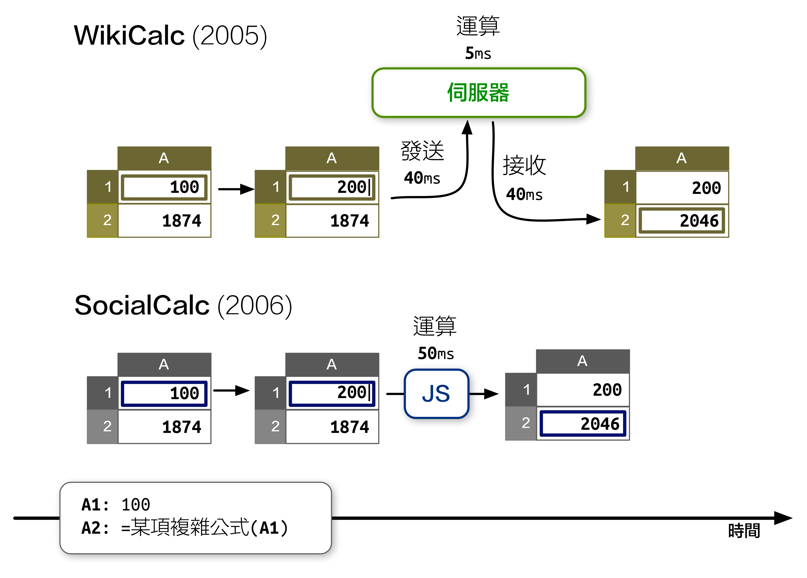
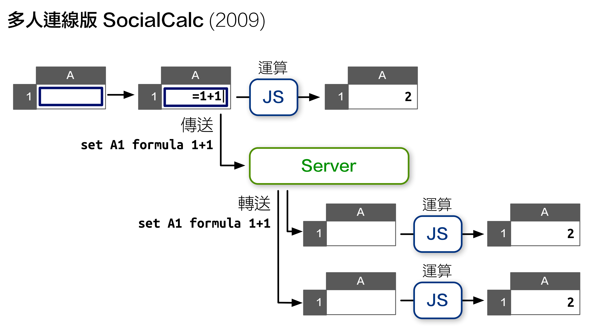
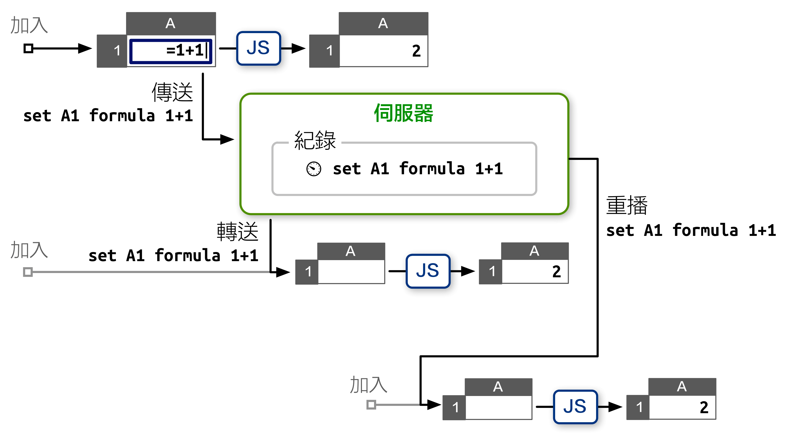
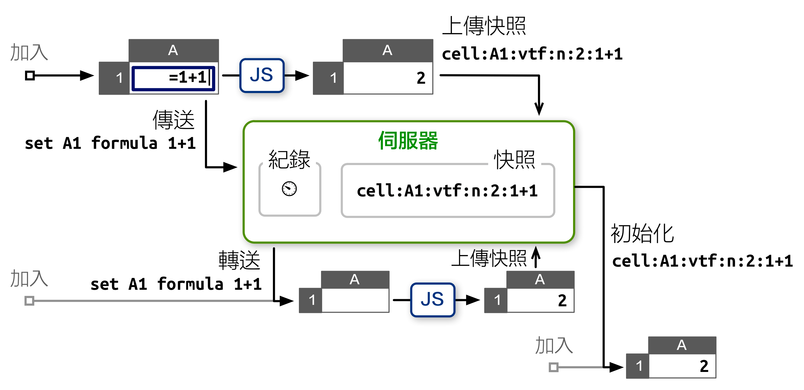
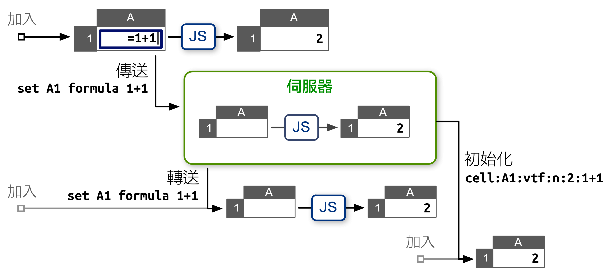
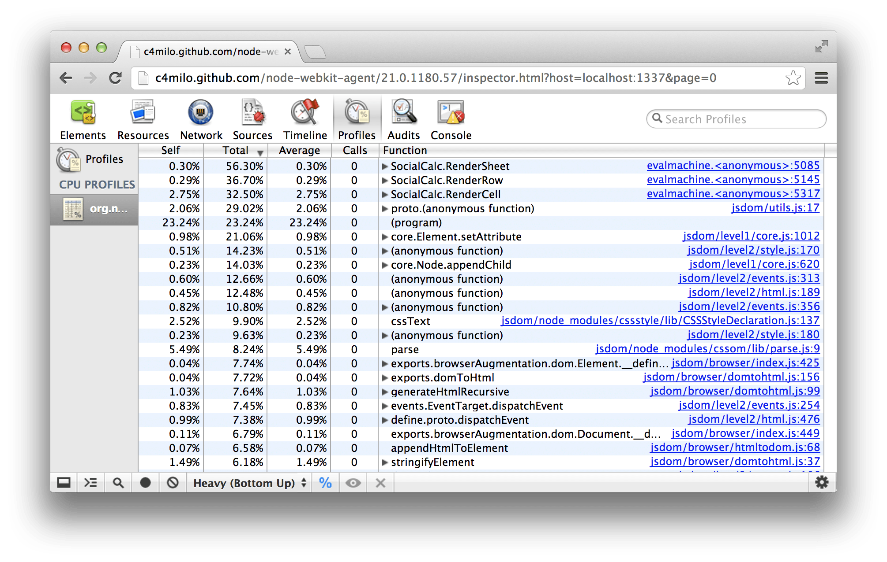
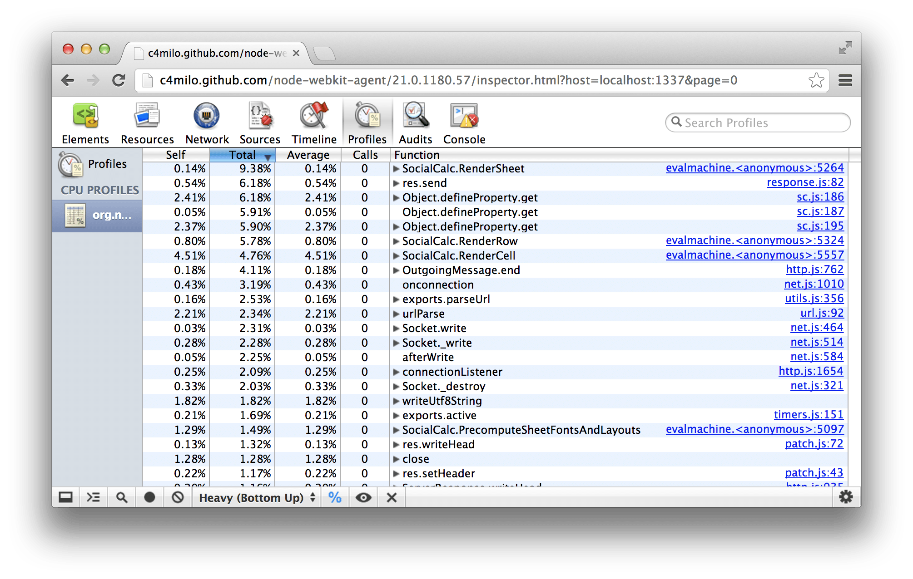
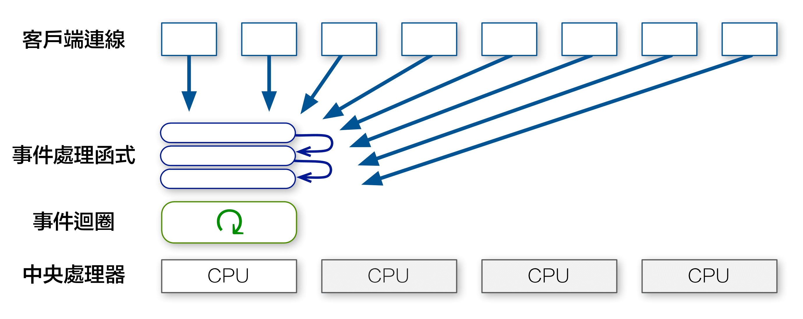
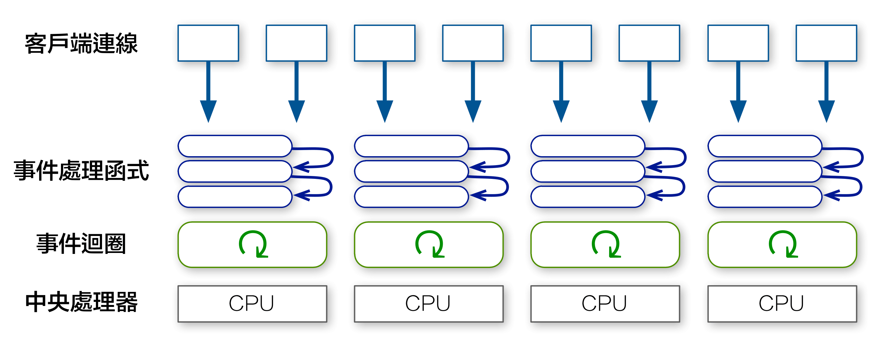
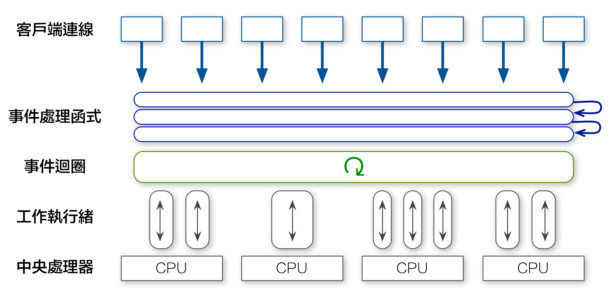

EtherCalc
即时协作电子表格

安装
npm install ethercalc ./node_modules/ethercalc/bin/ethercalc
sudo
加上 npm install -g
参数来安装： npm install -g ethercalc ethercalc
演示文稿
- 下载 Keynote 演示文稿 (15MB)
- 下载 QuickTime 视频 (58MB)
- 下载 PDF 演示文稿 (20MB)
- 在线浏览 PDF 演示文稿 (SlideShare)
Slides
- Download Keynote slides (15MB)
- Download OpenDocument slides (15MB)
- Download PDF slides (20MB)
- View PDF slides online (SlideShare)
系统架构
缘起
- 每位使用者都需要安装特定版本的电子表格编辑器。
- 电子邮件往来、共享文件夹，或安装一套专用的版本控制系统，都会增加额外的管理成本。
- 变动追踪功能非常有限；举例来说，Excel 无法对格式和单元格注释内容的变动保留历史记录。
- 更新模板中的格式或公式后，还需对使用该公式的所有电子表格文件进行更繁琐的手工更新。
WikiCalc
- 纯文字、HTML，以及Wiki式的文本标记支持。
- Wiki文字包含插入链接、图片，以及和从存储格引用值的功能。
- 公式存储格可以引用放在其他网站的 WikiCalc 网页里的值。
- 支持输出到静态网页，以及将动态资料内嵌至其他网页。
- 存储格能使用 CSS 来改变样式。
- 记录所有编辑操作，以供稽核纪录。
- 和Wiki系统一样，保留每一个版本，并可以随时回复。
<table> 元素呈现；编辑存储格时，浏览器会发送一个 ajaxsetcell 指令到服务器，然后服务器告诉浏览器哪个存储格需要更新。<table> 元素与电子表格有着相同大小，一个 100x100 电子表格会在 DOM 里创建上万个 <td> 元素，大量消耗浏览器的内存资源，进一步限制页面的大小。- 处理十万个存储格的能力。
- 进行编辑操作时提供快速响应。
- 客户端的稽核纪录和还原/重作支持。
- 善用 JavaScript 和 CSS ，提供完整的视觉呈现功能。
- 用 JavaScript 提升性能，并加强对各种不同浏览器的支持。
SocialCalc
- Sheet 是资料模型，代表电子表格在内存中的结构。
模型中包含从坐标指向 Cell 对象的字典，每个对象代表一个存储格。空存储格所在的坐标不需要有对应的对象，因此完全不占用内存。
- Cell 代表存储格的内容和格式。
下面列出的是一些常见的 Cell 对象属性：
datatype t datavalue 1Q84 color black bgcolor white font italic bold 12pt Ubuntu comment Ichi-Kyu-Hachi-Yon - RenderContext 用于实现视图，需要负责将表格绘制为相应的 DOM 对象。
- TableControl 则是主控制器，负责接收鼠标和键盘事件。
在接收到视图事件，例如滚动和调整大小后，就会对相关 RenderContext 对象进行更新。如果收到应用于电子表格内容的更新事件，则会在电子表格的指令队列中加入新的指令。
- SpreadSheetControl 负责绘制顶层界面，包括工具栏、状态栏、对话框，以及颜色选择器。
- SpreadSheetViewer 是另一套顶层界面，主要提供只读的互动视图。
SocialCalc.* 命名空间里，以避免命名冲突。ScheduleSheetCommands 方法进行，因此需要通过指令字串来代表编辑操作。常用的指令如下： set sheet defaultcolor blue
set A width 100
set A1 value n 42
set A2 text t Hello
set A3 formula A1*2
set A4 empty
set A5 bgcolor green
merge A1:B2
unmerge A1
erase A2
cut A3
paste A4
copy A5
sort A1:B9 A up B down
name define Foo A1:A5
name desc Foo Used in formulas like SUM(Foo)
name delete Foo
startcmdextension UserDefined args
SocialCalc.SheetCommandInfo.CmdExtensionCallbacks 对象，即可使用 startcmdextension 指令进行呼叫。指令的循环运行
busy 属性设为 true；后续指令则需加入到 deferredCommands 队列，以确保指令能循序执行。事件循环看起来像这样：StatusCallback 事件，以提醒使用者当前的指令执行状态。这一过程可以分为下列四个步骤：- 执行指令
启动时发送
cmdstart，执行完成后则发送cmdend。如果指令间接更改了某存储格的值，则进入重算步骤。否则，如果指令更改了一个或多个已在屏幕上显示的存储格的视觉外观，则进入绘制步骤。如果上述情况都不符合（例如在使用copy指令时），则跳到位置计算步骤。 - 重算（如果需要的话）
启动时发送
calcstart，在检查存储格的依存链时每隔 100ms 发送calcorder，完成检查时则发送calccheckdone，并在所有受影响存储格获得重算后的值后发送calcfinished。这一步骤之后总是需要执行绘制步骤。 - 绘制（如果需要的话）
启动时发送
schedrender，如果使用格式化后的存储格更新了<table>DOM 对象，则发送renderdone。这一步骤之后总是需要执行位置计算步骤。 - 位置计算
启动时发送
schedposcalc，并在更新了滚动条、目前存储格游标，以及 TableEditor 的其他视觉组件后发送doneposcalc。
Sheet.CreateAuditString 方法会传回以换行隔开的字符串，每行内容对应到一个指令的相关记录。ExecuteSheetCommand 还可为执行的每个指令创建还原指令。举例来说，如果存储格 A1 包含 Foo，而使用者执行了 set A1 text Bar，则还原指令set A1 text Foo 会被推送到 UndoStack 里。如果使用者进行还原操作，则会通过执行还原指令来让 A1 的内容回到原先的值。电子表格编辑器
<td> 元素，而是直接创建固定大小的 <table>，使它充分填满浏览器的可视区域，并为其预先填充 <td> 元素。<td> 元素的 innerHTML。这意味着在很多常见情况下，我们并不需要创建/删除任何 <tr> 或 <td> 元素，因此大幅提升了响应速度。Sheet.ParseSheetSave 方法可在Sheet 对象中解析存储格式字串，而 Sheet.CreateSheetSave 方法可将 Sheet 对象序列化为存储格式。recalc 指令会重新抓取被引用的外部电子电子表格，并使用 Sheet.ParseSheetSave 对其进行解析，然后将其存储在暂存区中，这样使用者即可在不重新抓取内容的情况下，直接引用相同远端表格中其他存储格的内容。存储格式
multipart/mixed 格式，主要由四个 text/plain; charset=UTF-8 部件组成，每部件包含以换行隔开的文字，并用冒号划分资料栏位。这些部件包括：meta部件列出其他部件的型别。sheet部件列出每个存储格的格式和功能、每个列的宽度（如果不是预设宽度）、表格的预设格式，以及该电子表格中用到的字体、颜色，及边框列表。- 可选的
edit部件可保存 TableEditor 的编辑状态，包括 ECell 的最后一个位置，以及行/列窗格的固定大小。 - 可选的
audit部件包含上一次编辑会话中执行过的指令历史记录。
1874，A2 中是公式 2^2*43，A3 中的公式 SUM(Foo) 则显示为粗体字，代表命名范围从 Foo 到 A1:A2： socialcalc:version:1.0
MIME-Version: 1.0
Content-Type: multipart/mixed; boundary=SocialCalcSpreadsheetControlSave
--SocialCalcSpreadsheetControlSave
Content-type: text/plain; charset=UTF-8
# SocialCalc Spreadsheet Control Save
version:1.0
part:sheet
part:edit
part:audit
--SocialCalcSpreadsheetControlSave
Content-type: text/plain; charset=UTF-8
version:1.5
cell:A1:v:1874
cell:A2:vtf:n:172:2^2*43
cell:A3:vtf:n:2046:SUM(Foo):f:1
sheet:c:1:r:3
font:1:normal bold * *
name:FOO::A1\cA2
--SocialCalcSpreadsheetControlSave
Content-type: text/plain; charset=UTF-8
version:1.0
rowpane:0:1:14
colpane:0:1:16
ecell:A1
--SocialCalcSpreadsheetControlSave
Content-type: text/plain; charset=UTF-8
set A1 value n 1874
set A2 formula 2^2*43
name define Foo A1:A2
set A3 formula SUM(Foo)
--SocialCalcSpreadsheetControlSave--
.xls) 及 OpenDocument (.ods) 之间进行转换。富文本编辑
textvalueformat 属性）设为 text-wiki，并为它提供自定的绘制器。textvalueformat 属性是什么呢？请见下文。类型与格式
datatype 及一个 valuetype 属性。包含文字/数字资料的存储格分别对应到文字/数字值类型，而具备 datatype="f" 的公式存储格则可能会生成数字或文字值。valuetype：如果以 t 开头，则该存储格的textvalueformat 属性会决定如何进行生成。如果以 n 开头，则使用 nontextvalueformat 属性进行判断。textvalueformat 或 nontextvalueformat 属性没有定义，则会通过其 valuetype 属性查询预设格式，如下图所示：text-wiki 值格式的支持，写在 SocialCalc.format_text_for_display 中： if (SocialCalc.Callbacks.expand_wiki
&& /^text-wiki/.test(valueformat)
) {
// do general wiki markup
displayvalue = SocialCalc.Callbacks.expand_wiki(
displayvalue, sheetobj, linkstyle, valueformat
);
}
format_text_for_display 里，而是在 SocialCalc.Callbacks 里定义一个新的挂钩。这是 SocialCalc 代码里推荐的方法：这种模组化的设计，让应用程序可以支持各种不同Wiki文字的语法。如果应用程序用不到 text-wiki 格式，也可以直接忽略 expand_wiki 挂钩。绘制Wiki文字
expand_wiki 函数，将存储格的值透过 Wikiwyg 的 Wikitext 解析器和 HTML 产生器转换成 HTML： var parser = new Document.Parser.Wikitext();
var emitter = new Document.Emitter.HTML();
SocialCalc.Callbacks.expand_wiki = function(val) {
// Convert val from Wikitext to HTML
return parser.parse(val, emitter);
}
set sheet defaulttextvalueformat text-wiki 加入命令队列： // Assume there's a <div id="tableeditor"/> in DOM
var spreadsheet = new SocialCalc.SpreadsheetControl();
spreadsheet.InitializeSpreadsheetControl(
"tableeditor", 0, 0, 0
);
spreadsheet.ExecuteCommand(
'set sheet defaulttextvalueformat text-wiki'
);
*bold* _italic_ `monospace` {{unformatted}}
> indented text
* unordered list
# ordered list
"Hyperlink with label"<http://softwaregarden.com/>
{image: http://www.socialtext.com/images/logo.png}
A1 中输入 *bold* _italic_ `monospace`，随后即可看到绘制后的富文本内容：即时多人协作
ScheduleSheetCommands 方法增加了 isRemote 参数： SocialCalc.ScheduleSheetCommands =
function(sheet, cmdstr, saveundo, isRemote) {
if (SocialCalc.Callbacks.broadcast && !isRemote) {
SocialCalc.Callbacks.broadcast('execute', {
cmdstr: cmdstr,
saveundo: saveundo
});
}
// ...original ScheduleSheetCommands code here...
};
SocialCalc.Callbacks.broadcast 回调函数，即可让所有连入此电子表格的客户端执行相同的指令。broadcast 函数是用 XPCOM 框架写成，并在 OLPC/Sugar 的标准传输层 D-Bus/Telepathy 网络上运行：跨浏览器传输
SocialCalc.Callbacks.broadcast 函数定义如下: var hpipe = new Hippie.Pipe();
SocialCalc.Callbacks.broadcast = function(type, data) {
hpipe.send({ type: type, data: data });
};
$(hpipe).bind("message.execute", function (e, d) {
var ss = SocialCalc.CurrentSpreadsheetControlObject;
ss.context.sheetobj.ScheduleSheetCommands(
d.data.cmdstr,
d.data.saveundo,
true // isRemote = true
);
break;
});
冲突解决
- 当客户传播出一个指令时，会将指令添加到待办队列。
- 当客户接收到一个指令时，检查待办队列：
- 如果待办队列为空，则直接执行这项远端指令。
- 如果它符合待办队列里的本地指令，则将它将从队列中移除。
- 否则，检查队列中是否有指令与接收到的指令相冲突：
- 如果存在冲突指令，则先还原这些指令，并将其标记为稍后重作。
- 在还原所有的冲突指令之后，将远端指令按正常状态执行。
- 当从服务器上接收到标记为重做的指令时，客户端将再次执行指令，再从队列中将其移除。
远端游标
MoveECellCallback 事件添加了另一个 broadcast 处理程序: editor.MoveECellCallback.broadcast = function(e) {
hpipe.send({
type: 'ecell',
data: e.ecell.coord
});
};
$(hpipe).bind("message.ecell", function (e, d) {
var cr = SocialCalc.coordToCr(d.data);
var cell = SocialCalc.GetEditorCellElement(
editor, cr.row, cr.col
);
// ...decorate cell with styles specific
// to the remote user(s) on it...
});
border 属性了。而由于 border 为单一颜色，因此在相同的存储格只能表现一个游标。box-shadow 功能来表现多个游标: /* Two cursors on the same cell */
box-shadow: inset 0 0 0 4px red, inset 0 0 0 2px green;
开发经验谈
愿景清晰的首席设计师非常重要
概念的完整性是伟大设计中最重要的特性。由于完整的概念只能出自一人或少数人的合作构想，因此明智的管理者会大胆委托才华出众的首席设计师，来承担整个设计任务。
Wiki确保项目延续
善加运用时区差异
哥本哈根和芝加哥之间相隔的七个时区，实际上减少了我们受到的打扰，让我们做出更多工作。
乐趣最优
通过故事测试推动开发工作
工作的最基本单元是一系列“故事”，也就是一系列非常轻量级的需求文件。每个故事只包含对一个功能的简要描述，以及此功能的运作实例，用最直白的文句进行描述。我们称这些实例为“接纳度测试”。在故事形成初期，设计师会先写出初步的接纳度测试，随后由开发人员和测试人员进行讨论，之后开发人员才开始编写代码。
CPAL 开源授权
- Drupal 的 Sheetnode 项目，及其自行维护的 SocialCalc 分支。
- Luke Closs 发起的 OLPC/XOCOM 平台移植版。
- SEETA 的 OLPC/Sugar 平台移植版，由 Luke 的版本衍生而来。
- SEETA 的 Palm Pre 平台移植版。
- Ramu Ramamurthy 的 Scala/Java 电子表格服务器项目。
性能架构
从 SocialCalc 到 EtherCalc
先前在《开源应用程序架构》 一书中，我介绍了 SocialCalc 这个在浏览器中运行的电子表格编辑器，以取代服务器为中心的 WikiCalc 架构。SocialCalc 在浏览器中执行所有的计算，只有在载入和存储电子表格时才会使用服务器。
追求性能是 Socialtext 团队在 2006 年时设计 SocialCalc 的主要目的。重点在于：在 JavaScript 环境下执行客户端计算，尽管在当年的速度仅有服务器端 Perl 计算的十分之一，但仍然胜过 AJAX 来回传输资料造成的网络延迟：

《开源应用程序架构》的最后一段里，我们介绍了如何透过一种简单、类似聊天室的架构，来进行电子表格同步协作：

然而，当我们开始进行上线测试时，却发现它的性能与扩展性不符实际需求，这也激发我们重写整个系统，以便达到可接受的性能水准。
本章将会讨论 EtherCalc 系统的演进过程。它是 SocialCalc 的后续项目，为电子表格提供多人同步的编辑功能。我们会详述系统架构的沿革，介绍相关的性能分析工具，以及我们创造出哪些新的工具来克服性能上的问题。
设计限制
Socialtext 平台同时具有“防火墙内”及“云端部署”两种选项，这对 EtherCalc 的资源及性能需求增加了独特的限制。本书写作时，Socialtext 在 vSphere 为基础的内部网络主机服务内的最低需求，是双核心处理器和 4GB 的内存容量。典型的 EC2 虚拟主机服务则提供大约两倍的性能，相当于四核心和 7.5GB 的内存容量。
内部网络的部署需求，代表我们不能像多租户的主机模式系统那样，靠扩充硬件来解决问题（例如 DocVerse，后来成为 Google Docs 的一部分）；系统必须能在一个普通的服务器上运行。
相较于内部网络部署，云端主机可以藉由随选扩充，来提供较高的性能，但是浏览器的网络连线通常比较慢，而且断线与重新连线的状况相当频繁。
综上所述，这些形塑 EtherCalc 架构方向的资源所受的限制有：
内存：以事件为基础的服务器，能让我们用较少的内存处理数千个同时发生的网络连线。
处理器：基于 SocialCalc 的原始设计，我们把大部分计算及所有内容绘制移到客户端 JavaScript 运行，以减少服务器的负载。
网络：传送电子表格操作指令而非内容，可降低所需的带宽，并从不稳定的网络连线上恢复。
初步原型
我们首先用 Perl 5 语言撰写了一套 WebSocket 服务器，透过 Socialtext 开发的 Feersum 这个以 libev 为基础的事件引擎提供支持。Feersum 的速度相当快，在一般状况下每秒可处理上万笔请求。
除了 Feersum 以外，我们还使用中间件 PocketIO，接上广受好评的 Socket.io JavaScript 客户端，以相容于尚未支持 WebSocket 的旧版浏览器。
这个初步原型跟聊天室服务器十分相似，每个协作时段就相当于一个聊天室；客户端可以将本地的执行指令及游标动作传送到服务器，然后透过服务器转送给同一个聊天室里的所有客户。
典型的操作流程就像这样：

服务器在纪录每个收到的指令时，都会附上时间戳。如果客户断线后又重新连线，它可以撷取这段时间的积存纪录，然后重新执行那些指令，以达到跟其他人相同的状态。
如同我们在《开源应用程序架构》提到的，这个简单的设计大幅减少了服务器端的处理器与内存需求，并且可以在网络连线失败的状况下，展现出合理的复原能力。
第一个瓶颈
然而，我们在 2011 年 6 月实地测试雏型时，却发现随着协作编辑的执行时段愈长，就会出现愈严重的性能问题。
由于电子表格是长久存在的文件，因此经过数周的编辑，协作时段可能会累积数千笔的修改纪录。
在前述的积存纪录模型下，在新客户端加入协作时段时，势必遇上明显的启动延迟：它得先重新执行数千个指令，才能进行任何修改。
为了减轻这个问题，我们采用了快照机制。每当 100 个指令传送到协作时段后，服务器就会调查在线每个客户的状态，然后将最新收到的快照存储在积存纪录中。新加入的客户端仅需接收这个快照，以及快照存储之后 新输入的指令即可。这样一来，它最多只需要重新执行 99 个指令。

这个权宜之计解决了新加入客户端的处理器延迟问题，但却带来了网络性能不佳的问题，因为它会每隔一阵子，就耗用每个客户端的上载带宽。若是连线速度缓慢，客户端后续指令的发送时间就会受到延迟。
除此以外，服务器没有办法确认客户端上传的快照是否正确。错误的快照会弄乱所有新加入者的状态，导致它们和其他其他共同编辑者失去一致性。
细心的读者也许会发现，这两个问题的症结，都是因为服务器缺乏执行电子表格指令的能力。如果服务器在接收到每个指令时，可以自行更新内部的电子表格状态，它其实根本不需要维护指令的积存纪录。
浏览器内的 SocialCalc 电子表格引擎，是用 JavaScript 语言写成。我们曾考虑过把它的逻辑转译成 Perl，以在服务器端执行，但是维护两套程序码需要付出极大的成本。我们也尝试在服务器端嵌入 JavaScript 引擎（V8、SpiderMonkey 等），但它们在 Feersum 事件回圈里运作时，会产生许多性能上的问题。
到了 2011 年 8 月，我们终于决定打掉重练，用 Node.js 重写服务器。
移植到 Node.js
由于 Feersum 和 Node.js 都以 libev 事件模型为基础，而且 Pocket.io 的程序接口跟 Socket.io 几乎相同，所以最初的改写十分顺利。
感谢 ZappaJS 框架提供的简洁接口，我们只花了一个下午，用了 80 行程序，就写出了功能相当的服务器。
简单的性能测试显示，Node.js 的处理效率比 Feersum 少了一半左右：在 2011 年的 Core i5 处理器上，Feersum+Tatsumaki 每秒可处理 5000 次请求，而 Node.js+Express 的每秒上限约为 2800 次请求。
由于这还在我们可接受的范围内，不致于影响日常使用，因此我们接受这项缺陷，并且期望它在一段时间后会有所改善。
在初步移植完毕之后，我们便着手将每个编辑阶段的电子表格状态存放在服务器端，以减少客户端的处理器使用，并大幅降低所需的带宽：

服务器端 SocialCalc
jsdom 是提升作业性能的关键技术，它完整实作了 W3C 文件对象模型，让 Node.js 能在模拟的浏览器环境内，载入写给客户端的 JavaScript 程序库。
利用 jsdom，我们可以在服务器端任意创建 SocialCalc 电子表格，它们会在各自的沙盒里进行计算：
require! <[ vm jsdom ]>
create-spreadsheet = ->
document = jsdom.jsdom \<html><body/></html>
sandbox = vm.createContext window: document.createWindow! <<< {
setTimeout, clearTimeout, alert: console.log
}
vm.runInContext """
#packed-SocialCalc-js-code
window.ss = new SocialCalc.SpreadsheetControl
""" sandbox
每个协作时段都对应到一个沙盒内的 SocialCalc 控制器，即时执行客户端传来的指令。当新客户端加入时，服务器仅需传送电子表格控制器内的最新状态，从而彻底解决积存纪录带来的性能问题。
对测试结果感到满意之后，我们编写了一个以 Redis 为基础的存储引擎，并在 EtherCalc.org 公开测试。在接下来的六个月里，它展现了极佳的扩展性，顺利执行了数百万笔电子表格运作，没有发生任何状况。
2012 年 4 月，我在 OSDC.tw 大会上以 EtherCalc 为主题发表演讲，之后趋势科技公司邀我参加他们的黑客松，将 EtherCalc 改作成可编程序的视觉化引擎，用来即时监视网络流量资料。
为了这个使用案例，我们制作 REST 接口，以便用 GET、PUT 存取电子表格中的个别存储格，并使用 POST 将指令直接发送到电子表格内。在这场黑客松里，崭新的 REST 处理器每秒接收数百笔呼叫，在浏览器中即时更新图像及公式格内容，完全没有发生速度减缓或内存泄漏的状况。
然而在最后展示会上，当我们将流量资料输送到 EtherCalc，开始把公式输入浏览器中的电子表格时，服务器突然当掉，冻结了所有执行中的连线。我们重新执行 Node.js 作业，却只见它耗用 100% 的处理器资源，随即又锁住不动。
吃惊之余，我们换回较早的资料重新执行。它的运作没有问题，也让我们的展示得以完成。但我不禁在想：一开始导致程序当掉的原因究竟是什么？
Node.js 性能分析
要找出 CPU 卡在哪里，就得使用性能分析器。
Perl 初步原型的性能监测方式相当简单明瞭，这大半要归功于优秀的 NYTProf 工具，它能利用详尽的 HTML 报告以及互动式的函数呼叫视觉界面，详细列出每个函数、每个区块、每列、每个操作码的时间信息。除此以外，我们也利用 Perl 内建的 DTrace 支持，针对长时运行的程序，取得函数出入的即时数据。
相形之下，Node.js 的性能分析工具还有很大的进步空间。截至此时，DTrace 仍只能在 illumos 系作业系统的 32 位元模式下运行，因此我们大多得靠 Node Webkit Agent 提供的分析接口，即使它只提供函数层级的数据资料。
典型的运行方式如下：
# "lsc" 是 LiveScript 编译器
# 先载入 WebKit agent 模组，然后执行 app.js:
lsc -r webkit-devtools-agent -er ./app.js
# 另开一个终端机页签，启动分析器：
killall -USR2 node
# 在 WebKit 浏览器里开启下列网址，开始性能分析：
open http://tinyurl.com/node0-8-agent
为了重现沉重的后台负载，我们运用 ab 执行高度并行的 REST API 呼叫程序。为了模拟移动游标、更新公式等浏览器端的运作状况，我们采用了同样以 jsdom 和 Node.js 编写的无显示接口浏览器 Zombie.js。
有趣的是，我们发现瓶颈正是出在 jsdom 本身：

从上面的报告中可以看出，RenderSheet 占用 CPU 的时间最多：每当收到指令时，服务器都会用几微秒的时间重新绘制单元格的 innerHTML 属性，以反映指令的执行效果。
因为所有 jsdom 代码都在同一个线程中运行，所以后续的 REST API 呼叫将会卡住，直到上一命令的绘制过程结束为止。在高度并行的情况下，过长的队列触发了潜藏的瑕疵，最终使服务器当掉。
我们在仔细检查了对象使用情况之后，发现绘制结果几乎毫无用处，因为服务器端根本毋需即时显示 HTML 内容。唯一用到绘制结果的是“汇出 HTML”这个 API，但其实我们可以等到实际有人呼叫它时，再利用内存内的电子表格结构，绘制出每个单元格的 innerHTML 属性。
所以，我们移除了 RenderSheet 函数，用 20 行 LiveScript 代码 重新实作了汇出 HTML 所需的极少数 DOM 接口，然后再运行了一次性能分析器：

现在好多了！我们将流量提高了 4 倍，将 HTML 汇出速度加快了 20 倍，也顺利解决了死机问题。
多核心扩展
这一轮改进完成后，我们终于觉得没有顾虑，可以将 EtherCalc 整合到 Socialtext 平台里，为Wiki页面和电子表格提供同时编辑的功能。
为了确保实际上线时的响应效率，我们部署了一个反向代理 nginx 服务器，利用它的 limit_req 指令对 API 呼叫的速率设置上限。对于“防火墙内”和“专属远端服务器”这两种情况，执行结果确实都令人满意。
但是，对于中小型企业客户，Socialtext 还有第三种部署方式：“多户共用远端服务器”。在一台大型服务器里，我们同时为超过 35000 家公司提供服务，每家公司平均约有 100 位用户。
在这种多户共用情形里，所有执行 REST API 调用的客户的请求，都会计入每秒的最大请求次数，从而使每位客户的实际限制都严格得多，平均限制约为每秒请求 5 次。上一节中已经指出，这种限制的成因，是由于 Node.js 仅能使用一个 CPU 来执行所有计算操作：

是否有办法利用大型服务器里那些闲置的 CPU 呢？
对于运行在多核心机器上的其他 Node.js 服务，我们采用了预先分支的 cluster-server 模组，同时运行与 CPU 数量相同的进程：

尽管 EtherCalc 确实能同时运行在多个服务器上（透过 Redis 作统筹），但在单一服务器的情形下，Socket.io 集群 与 RedisStore 的相互作用会使程序逻辑变得非常复杂，难以侦错。
此外，如果集群里的每个进程都在忙着处理 CPU 计算，新来的连线仍然会被卡住。
因此，我们决定不采用固定数量的预先分支进程，而是设法为服务器内的每份电子表格各创建一个线程，从而让每颗 CPU 平均分摊所有的指令执行工作：

W3C 定义的 Web Worker 界面，刚好符合这项需求。它原先是为了浏览器环境下，独立运行的后台线程而设计。如此一来，长时间运行的后台任务，便不会影响主线程的响应速度。
因此，我写出了 webworker-threads 这套 Node.js 模组，提供相容于 W3C 标准的跨平台接口。
利用 webworker-threads，可以轻易创建新的 SocialCalc 线程（每份电子表格约需 30kb 内存），并与其进行通信：
{ Worker } = require \webworker-threads
w = new Worker \packed-SocialCalc.js
w.onmessage = (event) -> ...
w.postMessage command
这套解决方案堪称两全其美：在多核环境下，我们可按照实际需求，分配多颗 CPU 供 EtherCalc 使用。在单核环境下，创建线程也仅需耗用极少的资源，即可将计算移到后台执行。
开发经验谈
不像 SocialCalc 项目有精准的规格定义及团队开发流程，EtherCalc 在 2011 年中到 2012 年底的这段时间里，仅是笔者个人的实验计划，用来评估 Node.js 是否足堪正式上线使用。
这样不受限制的自由度，让笔者得以尝试各式各样的语言、函数库、算法及架构。在这里，我希望能向各位分享这 18 个月来的一些开发经验。
限制带来解放
Fred Brooks 在《设计的设计》一书中提到“限制”的重要性：它让设计者可以缩小搜寻空间、帮助专注并加速设计流程。这也包括了自行加诸的限制：
在一个设计任务上加诸人为的限制有个好处，就是设计者日后可以自行放宽这些限制。在理想情况下，这可以引人踏进设计空间中未曾探索过的角落，藉以激发创意。
在 EtherCalc 多次更迭的开发过程里，自行加诸的限制，让项目得以维持核心概念的完整。
举例来说，乍看之下，为三种不同的运行架构（内部网络、互联网、及多用户托管）各自定制一套服务器，似乎是不错的主意。但是，这种“过早的优化”，却会严重干扰核心概念的一致性。
与此相反，我持续专注在如何让 EtherCalc 在处理器、内存及网络同时受限时仍能运作顺畅，毋需顾此失彼。事实上，由于对于内存的需求小于 100MB，就算是像 Raspberry Pi 这样的嵌入式平台，都能轻松地运行 EtherCalc。
这样自我要求的设计，让将 EtherCalc 得以部署在三项资源都受限，而非只限制一项的“平台即服务”环境（例如 DotCloud、Nodejitsu 及 Heroku）下。这让人们可以轻易地架设电子表格服务，进一步促使独立的整合开发者作出更多贡献。
劣即是夯
在 2006 年于芝加哥举办的 YAPC::NA 大会上，笔者受邀对开源社区的未来发表预测，以下是我当时的发言：
虽然我无法证明，但我认为明年 JavaScript 2.0 将会达成自举、编译回 JavaScript 1，并且取代 Ruby，成为各个环境中的明日之星。
我认为 CPAN 与 JSAN 将会整并；JavaScript 会成为所有动态语言的普遍基础。Perl 将可以编译成 JavaScript，在浏览器、服务器及数据库中运行，并共用一套开发工具。
正因为“劣即是夯”的缘故，所以最差劲的语言，注定会成为最棒的。
我当时的看法，随着能以机器码速度执行的新一代 JavaScript 计算引擎出现，在 2009 年成为现实。到了 2012 年时，JavaScript 已成为“编写一次，随处运行”的虚拟机器；其他各式主要语言，包括 Perl，也都能被编译成 JavaScript。
除了客户端的浏览器与服务器端的 Node.js 之外，我们也让 JavaScript 能在 Postgres 数据库内运行，并在这三种运行环境下共用模组。
是什么促成了社区这样快速的成长？回到我开发 EtherCalc 的初期，参加刚具雏形的 NPM 社区的经验，我推估这是因为 JavaScript 并不强加特定的世界观到程序上，而是将自身融入许多不同的用途里。因此，创新者得以专注于创造字汇与用法（例如 jQuery 与 Node.js），从同一个自由的核心出发，淬炼出自己心目中的“优良部份”。
对新加入的开发者来说，只学到语言的一小部份就可以上手开发；资深的开发者则可以挑战既有传统，将它修改演进成为更好的版本。相对于仰赖一群核心团 队将语言设计成适合所有预期的用途，JavaScript 的草根开发演进历程呼应了 Richard P. Gabriel 著名的“劣即是夯”概念。
旧语新枝
相对于 Coro::AnyEvent 直接了当的 Perl 语法，Node.js 以回调为基础的程序接口，迫使我们写出层层相叠、难以重复利用的内嵌函数。
在尝试过许多辅助流程控制的程序库之后，我们最后决定改用 LiveScript 这套崭新的程序语言。它的语法深受 Perl 及 Haskell 影响，并且可以直接转译成 JavaScript。
事实上，EtherCalc 历经四种一脉相承的语言：JavaScript、CoffeeScript、Coco 与 LiveScript，每次移植都带来更好的表达力。js2coffee 与 js2ls 这些自动转译工具，也让程序码得以保有向前及向后的兼容性。
由于 LiveScript 直接编译成为 JavaScript，用它写出来的程序可以用原生速度运作，同时也完整支持以函数为范围的性能分析器。
LiveScript 使用新颖的建构方式，像是 backcall 与 cascade，来减少巢状回调。它也让我们得以使用强大的语意工具，来自由组合函数式及对象导向的程序布局。
我对 LiveScript 的第一印象是“像是蕴含在 Perl 6 里的轻量语言，挣扎着想要诞生…” — 透过专注于语法的亲和力，并采用与 JavaScript 相同的语意，这个新语言想达成的目标，确实比 Perl 6 要容易多了。
自由之零
自由软件基金会持续倡导四大类的软件自由。其中最基本的一种，称为“自由之零”，就是“无论为任何目的，都能执行程序的自由”。
在二十世纪，开源软件及私有软件都赋予使用者这种自由。我们太习惯这种自由，以致认为它理所当然，直到“云计算”出现为止。
将资料托管在共享的服务器上，并不是什么新的概念。远端存储服务的历史，几乎跟互联网一样悠久，而在持续进步的传输与加密技术防范资料遗失及窜改下，它们通常也都能顺利运作。
但是到了这个世纪，远端存储逐渐与远端计算及通信挂勾。一旦我们将计算交给远端的服务器，便再也不可能“为任何目的执行程序”了。取而代之的情况，是服务运营者独占了计算的内容，并拥有不受监管而能检视、审查使用者资料的权力。
因此，在“日常倚赖的程序都应该能取得源代码”这个众所周知的理念之外，“只将资料交给我们能信任的服务器进行计算”也是同等重要。为了达成这个目的，我将 EtherCalc 设计成可以轻易安装，因此它永远都能在您自己的电脑上运作。
Socialtext 为了 SocialCalc 电子表格的引擎，特别制定了通用公共授权，让使用者可以向服务运营者要求完整的 JavaScript 源代码，来鼓励服务运营商将他们所做的修改贡献出来。
至于 EtherCalc 这套多人协作服务器，笔者已将它捐入公众领域，让它可以整合进各式内容管理系统里。如此一来，任何人都能轻易为自己的团队架设一套电子表格协作系统。很多人已经这样做了，也非常欢迎您的加入！
（简体中文翻译：李勇强）